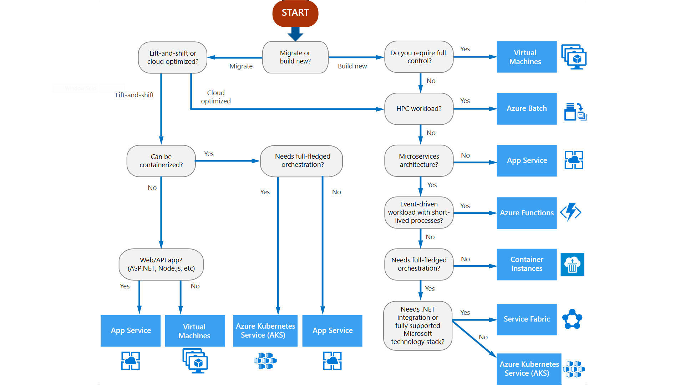

This post is intended for anyone actively trying to, or considering, obtaining Azure Solutions Architect Expert certification. As I have obtained certificate near the end of 2019, I wanted to share relevant information and findings gathered prior to and after taking exams, in order to help future applicants.
This post is part of my Azure Architect certification guide:
- So you want to be an Azure Solutions Architect Expert - Part 1 (this post)
- So you want to be an Azure Solutions Architect Expert - Part 2
Disclaimer: as AZ-300 and AZ-301 are being replaced with AZ-303 and AZ-304 exams late June 2020, you might find some information provided in this post to be outdated. I will try to take into account all information available for future versions and not go into details about topics that are becoming obsolete.
Prerequisites
In order to qualify for Azure Solutions Architect Expert certification, you are required to pass two exams: AZ-300: Microsoft Azure Architect Technologies and AZ-301: Microsoft Azure Architect Design. While AZ-300 deals mostly with skills related to deploying and configuring individual services to Azure, AZ-301 takes a deep dive into fulfilling business and system requirements such as availability, reliability, performance, as well as optimizing costs. I will focus mostly on technical aspects and go briefly through the types of questions you would encounter. Organizational information, such as exam length, scoring and how to apply, will not be a part of this post. Such instructions can be obtained from Microsoft certification site
Where to find study materials
Answer to this question is very simple: Microsoft Docs has all the information you will ever need to prepare for this certification. The only problem is there a lot of it. Like, really a lot. Like, it would take you several lifetimes to only skim it through. Not to mention content is added to it on a daily basis. Still, official Microsoft documentation is the ultimate place where you will find answers to any question about Azure. It is also pretty easy to navigate and search for relevant information. If you have not worked with it already, take some time to familiarize yourself. Because you will be coming back to it regularly.
Nick Colyer’s courses offered by Skylines Academy helped me identify all relevant topics required for the exams. Both of them clock at about 20 hours in total, which could be covered in a single weekend, if you are persistent enough. The course aided me getting into meat and bones of each exam and understanding what is required to pass. I cannot recommend it enough, as the course should serve you as a starting point into further studying. As a bonus piece of information, both courses are also available on A Cloud Guru, which offers seven day free trial.
On the other hand, Pluralsight has great paths for both AZ-300 and AZ-301 exam. Each path consists of dozen courses going into great depths of each topic covered. What I consider its greatest obstacle is the sheer amount of material, as both paths have, in total, well over 150 hours of video content. I would recommend them only to applicants who have enough time to spare. If you are not one of them, try to go through the materials at increased speed (1.2x or 1.3x works fine) or at least use them to selectively strengthen knowledge in areas you find yourself lacking. Pluralsight comes with a 10 day free trial, or, if you are lucky to have Visual Studio subscription, 3 to 6 months trial.
Lastly, try to go through a couple of practice tests, especially if you have never participated in this kind of exam. Some of them are offered on Certification page. Also, both AZ-300/AZ-303 and AZ-301/AZ-304 packs can be found on Udemy.
So you want to Azure (AZ-300: Microsoft Azure Architect Technologies)
With basic information out of the way, it is time to plunge ourselves into technical skills required. Exam marked as AZ-300 will put your knowledge of Azure services, deployment, configuration and networking to test.
What type of technology questions await
Technologies exam is a mixed bag of all question types that Microsoft is currently using. Best answer, multiple choice, drag and drop and case studies are just some of the formats you can expect.
Beware, significant part of AZ-300 are also hands-on tasks done directly in simulated Azure portal. They usually involve deploying and configuring several resources according to specification. For this reason, you really need to be comfortable working with portal using GUI as well as CLI or Powershell. Read the tasks at hand thoroughly and understand what is required of you, as speed is of essence here. From my personal experience, this part of exam took nearly half of available time, which I only realized once I was finished with it. Try not to repeat my mistake.
Storage resources
Working with different types of persistence technologies is pretty straightforward, since Azure hides most of the infrastructure details and leaves us with a pretty well-established abstractions. Although each of them can be used in multiple ways, there is usually an obvious best choice fulfilling task requirements. Typical concerns regarding service options are as follows:
- Storage account. Bread-and-butter of all persistence technologies, it is used by almost all Azure services requiring storage, even without users being aware of it. As a solution architect, you are expected to know what kind of services it offers (blob, file, queue, table) as well as difference between historical versions, e.g. Gen1 and Gen2, since even obsolete ones are still being offered. For each individual service, you should understand various options offered during deployment and how do they impact created resource.
- CosmosDB. At the time of AZ-300 creation CosmosDB was still new kid on the block, hence most database related questions involved different types of SQL Server and DocumentDB deployments. This is changing in AZ-303, since CosmosDB is heavily featured in its curriculum as a de facto NoSQL standard in Azure. Make sure you are familiar with different application interfaces it offers and how to optimize usage based on functional requirements. Same goes for Azure SQL database, in case relational database solution is required.
- Azure Service Bus. Although not typically used for storage, it still offers persistence in certain scenarios. You should be aware how Service Bus is utilized as a messaging medium, and what sets it appart from services such as Event Grid and Azure Queue storage. Make sure you understand difference between queue, consumer, topic and subscribers, and when each one should be utilized.
- Data lake and Azure Files. These services have specific usage scenarios which you need to be aware of. While Data Lake plays a pivotal role in storing and processing extreme ammounts of data, Azure files are especially prominent in backup and migration solutions.
Network and connectivity
Networking area is pretty straightforward, as it follows a set of explicit rules with little space to be creative. But do not even attempt to dive into it if you have knowledge gaps in topics such as IP addresses, CIDR notation, subnets, public and private ranges or what DNS is and how it works. All of these are just basis for whats to come, so make sure you handle them well first.
Exam specific topics include, but are not limited to:
- Virtual Networks (VNETs). Learn how to plan, deploy and configure them, how to use subnets effectively, what type of resources can be deployed to virtual network and what are the limitations.
- Connectivity. Find out what are the options when establishing connection between VNETs, on-premise locations and individual remote peers. Any combination is plausible, sometimes even all of them, and you need to know what kind of service is adequate for given scenario. Spend some time learning about VNET peering, ExpressRoute and VPN gateway.
- Routing and load balancing. Although not heavily emphasized in this exam, knowledge of different network appliances is still needed. Make sure you know what is the purpose of load balancer, custom appliances, Application Gateway, Traffic Manager and Azure Front Door, as well as basic deployment and configuration steps.
- Security. An important topic that can easily slip you by. You need to understand default security rules for resources deployed to VNETs and how to adjust them further. Do not miss reading on Network Security Groups (NSG), how to define individual security rules and where NSGs can be applied. Also, recognize what type of threats Web Application Firewall can protect your resources from and how to deploy it.
- DNS. Understand various Azure DNS service offerings. Make sure you know the difference between CNAME and A record and how they are used to perform different tasks in Azure. Examples include overriding default assigned server names or exposing deployed Azure services under your specific domain.
Compute resources

Realizing difference between service models offered by Azure is the key knowledge working with compute resources. Because all of them, in the end, have single purpose: to run a piece of code or application in cloud environment. Although there are many characteristics that will come into play in the design part, main point that you should take away for technology exam is the level of responsibility you have towards individual compute resources. Good overview of all Azure offerings is required as well, so make sure terms like Virtual Machines, App Service, Azure Functions and Kubernetes Service do not fall under your radar. Deploying and configuring all of them will be required of you, especially in the hands-on part of the exam.
Note that, even though Service Fabric was part of AZ-300 curriculum, it is missing from AZ-303.
Monitoring solutions
Tasks related to monitoring resources do not necessarily include only tools used to track performance and functionality of your deployment. Analytic services can help you optimize resource usage in order to provide more robust, flexible and often cheaper deploymen. Although complete monitoring solution often involves combination of several services, basic building blocks are:
- Log Analytics. Used to persist all log information. All services to follow utilize it either to store or read required data. Kusto language is used to query Log Analytics tables, but knowledge about its usage and syntax are no longer needed, as it was removed from AZ-303 curriculum.
- Azure Monitor. Fundamental service used to track various metrics gathered from underlying virtual machines. Although it is not deployed manually, ability to read Monitor metrics and define actions based on them will be expected of you.
- Application Insights. Often correlated with advanced compute resources, such as App Service and Azure Functions. How to track application metrics, logs and usage statistics is required knowledge for the exam.
- Action groups and Alerts. Although they represent separate entities in Azure, these two come hand in hand when developing notification solution. Double-check you are able to create alerts based on Azure resource metrics and notify appropriate targets.
- Azure Advisor. Even if you create advanced monitoring solution for your infrastructure and applications, covering wide range of system requirements, certain issues can slip under your radar. Azure Advisor can detect some of these automatically. It analyzes security, performance, reliability as well as cost of your deployment, and often helps optimize it based on preestablished rules. The exam will expect you to know basic issues that Azure advisor can help you solve.
Backup and migration
A significant part of the curriculum is dedicated to migration from on-premise site to cloud environment, hence learning about available tools and how to utilize them is pretty much a necessity. Azure Migrate is a versatile service covering everything from analyzing on-site resource utilization, provisioning cloud counterparts and even executing planned migrations. Learning about its individual components and their specifics is the key to get by this part of the exam.
On the other side, most notable backup services are covered by Azure Backup and Site Recovery. Since they play pivotal role in strengthening deployment resiliency and availability, they will be further mention during design exam post. For technological part, knowing how to deploy and configure them will suffice.
Security components
Since we mentioned security several times till now, it goes without saying it plays huge role in cloud environment. Azure is no different and offers you tools to finely adjust every part of your solution.
Heart of security is Azure AD, which is utilized in every aspect requiring authentication or authorization. Whether your solution is deployed purely to cloud, or you wish to combine it with on-premise resources, Azure has appropriate offering for you. Verify what the desired scenario is and know what kind of deployment is suitable.
Abbreviations such as RBAC, MFA, OAuth, OpenID and SAS must mean something to you. You have to be able to control and monitor user access to Azure resources and utilize advanced options offered by premium licenses. Know how to use Managed Identity and Security Principals to control service access to Azure resources. Learn how Key Vault can help store sensitive data and how to utilize it.
Deployment
If you go back and read previous sections, the most frequent word used would probably be deployment. Since it plays a mayor role even before you start working with resources in Azure, it deserves an honorary mention.
Azure Resource Manager templates, or simply ARM, is a term you will most definitely encounter when dealing with resource deployments. Understanding basic structure of ARM and how to export, as well as adjust them, will be expected of you. They can immensely help you during hands-on parts as well, especially if multiple resource deployment is required.
Conclusion
In this post I went through Azure Solutions Architect Expert certification prerequisites and recommended learning strategy. I have also covered most significant topics that you can encounter during first certification exam.
In the next post I will go through skills and knowledge required for the second exam, i.e. AZ-301: Microsoft Azure Architect Design. Follow me on Twitter to get notified when it gets published.
Comments